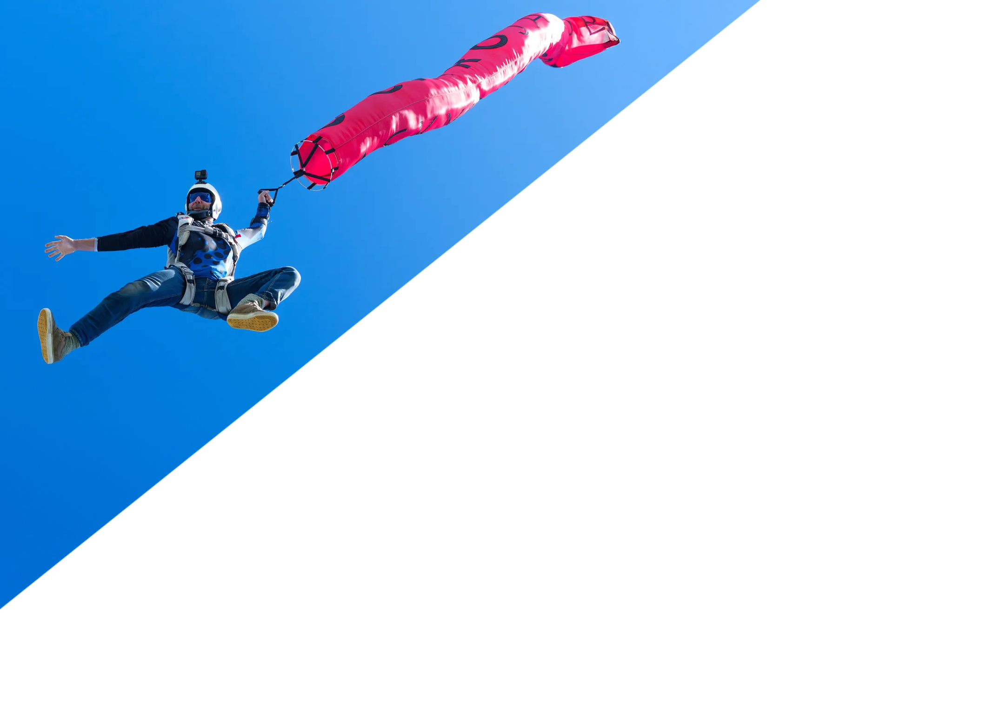
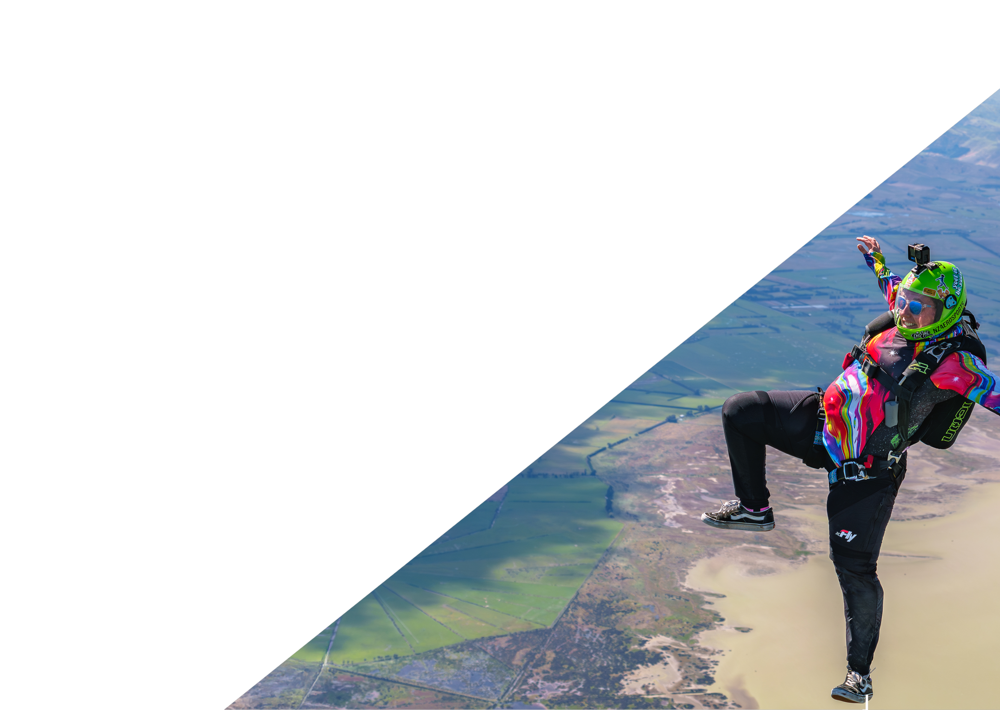

Canterbury's home for progression, community, and the jumps you'll talk about for years. Student training, sport coaching, and display skydiving over Christchurch.
Skydive DropX is a sport and club drop zone. There is no booking system. Jump days are coordinated through a Facebook Messenger group where the crew organises who is jumping, when, and what the conditions look like.
If you are a licensed jumper and want to get in the air, that is where you start. Join the group, introduce yourself, and get on a load.
Show up, grab a ticket, get in the air. All disciplines welcome. Want to push further? We have experienced coaches across canopy, freefly, and formation skydiving. Pick a discipline, pick a coach, go up. Join our Messenger Group to stay up to date.
Join on MessengerGround school, jump coaches, and a full progression pathway from first jump to licensed skydiver. Everything you need to go from the ground to the sky, right here at DropX.
A skydiver landing in your event doesn't just open the show, it makes it.
Custom flags, sponsor banners, or the New Zealand flag delivered into stadiums, waterfront events, and civic openings. We work with event organisers to plan the approach, the timing, and the moment. Professional, reliable, and built to be the highlight of the day.
We're here to build something different. A drop zone that pushes you, supports you, and keeps you coming back. This is Skydive DropX.